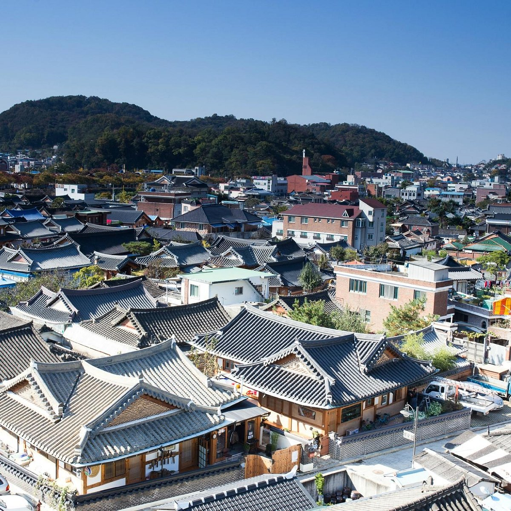

Jeonju Hanok Village
Explore Korea's largest traditional village, consisting of over 700 hanoks house. Get a glimpse of the rich cultural heritage of South Korea through its well-preserved hanok houses, which are traditional Korean houses with a unique architectural style.
- Duration: 6 hours approx.
- Price: ₩7000 won/hr
- Activities: Hanok stay, rent and wear hanboks